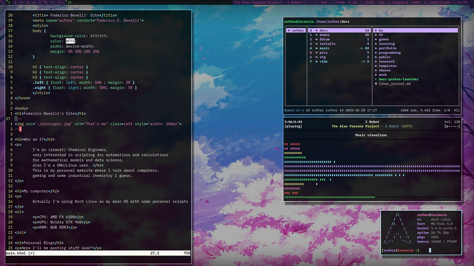

- Optimization of Soy's Isoflavones extraction
- Extraction of Rosemary's Carnosic Acid
- Modelling and design of an extraction and purifaction process
|  |
Before that, I've been a research helper for two years at the Organic Chemistry department,
where I helped with lab classes but also did some research developing a technique for the determination
of amilose in diverse kinds of starches. |